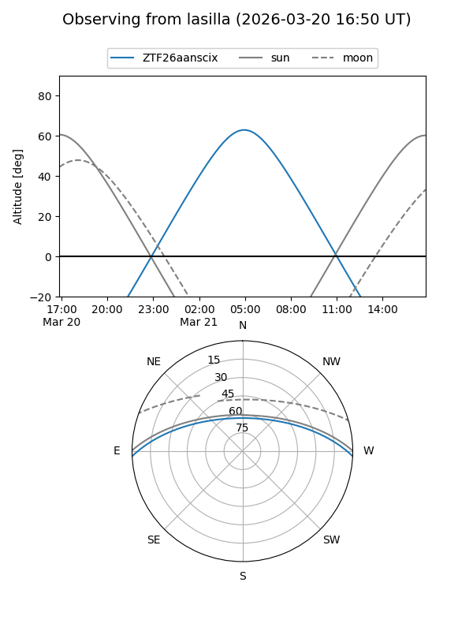
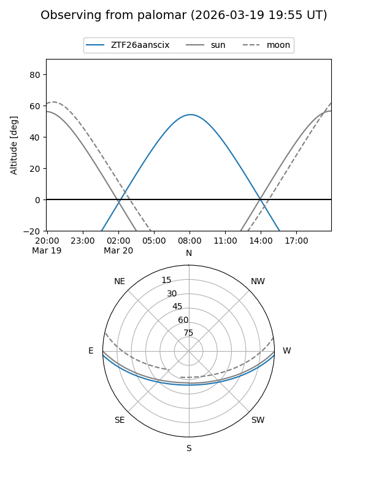

ZTF26aanscix
Target ZTF26aanscix at 2026-03-20 10:09
Aliases and brokers:
FINK: link
Lasair: link
ALeRCE: link
alt names
ZTF26aanscix (ztf,fink_ztf)
Coordinates:
equatorial (ra, dec) = 181.9374,-2.13552
equatorial (HMS+DMS) = 12:07:44.98,-02:08:07.86
galactic (l, b) = (281.4280,+58.90014)
Flags:
Photometry:
last ztfg=19.57
1 ztfg detections
Lightcurve
Visibility


Additional plots